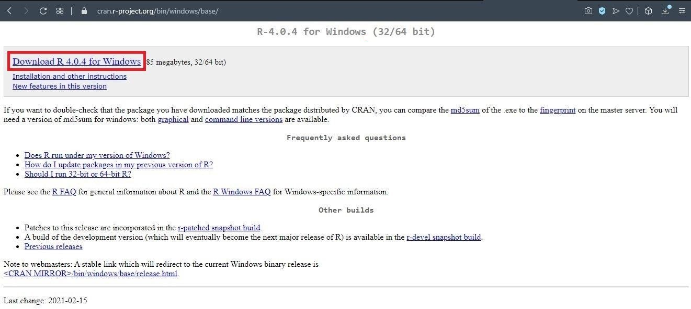
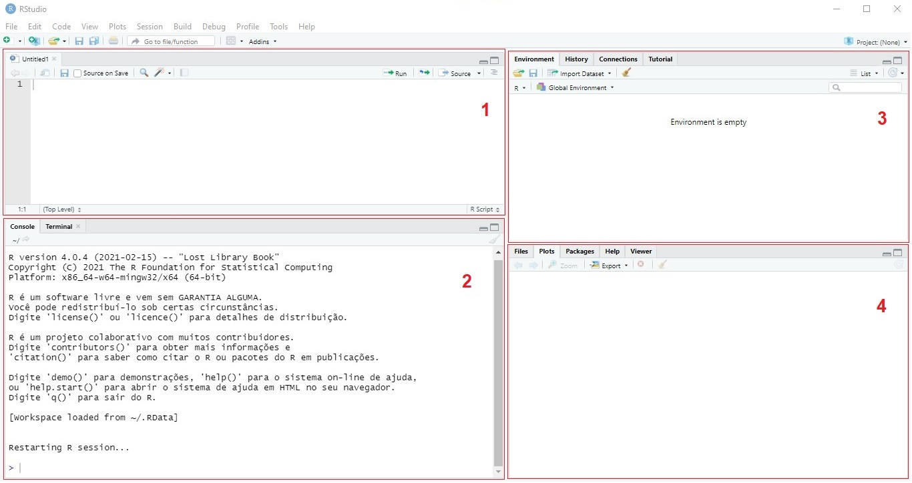

Introdução ao R
[EM CONSTRUÇÃO]
Texto introdutório
Como baixar e instalar o programa R e RStudio
Windows
- Baixar e instalar o R
- Acesse https://cran.r-project.org/bin/windows/base/ e clique em “Download R 4.0.4 for Windows”.

- Localize o arquivo baixado em sua máquina e dê um duplo clique no ícone para iniciar a instalação.

- Clique em “Executar”.

- Mantenha a opção de idioma clicando em “OK”.
- Clique em “Próximo” nas duas janelas seguintes.

- Verifique qual é o tipo do seu sistema (32 ou 64 bits) e deixe selecionada apenas o tipo correto. Clique em “Próximo”.
- Mantenha as opções selecionadas e clique em “Próximo” nas duas janelas seguintes.


- Aguarde a instalação.

- Por fim, clique em “Concluir”.

- Baixar a instalar o RSudio
- Acesse https://www.rstudio.com/products/rstudio/download/#download, desça até a parte do site que segue na imagem abaixo. Clique em “DOWNLOAD RSTUDIO FOR WINDOWS”
- Localize o arquivo baixado em sua máquina e dê um duplo clique no ícone para iniciar a instalação.
- Clique em “Próximo” nas duas janelas seguintes.
- Clique em “Instalar” e aguarde. Caso a segunda janela não feche sozinha, clique em “Próximo”

- Por fim, clique em “Concluir”
- Ao abrir o R-studio, você verá a seguinte tela com as seguintes partições:

A primeira partição é o “Script”, onde digitaremos os códigos que serão salvos; na segunda temos o “Console”, onde são exibidas as mensagens de erro, alerta, resultados de códigos, entre outros, nele também podemos digitar e rodar os códigos, mas estes não serão salvos; no terceiro quadro temos como uma opção o “Enviroment”, que mostra onde os objetos do código são armazenados; no quarto e último quadro temos as opções “File”, “Plots”, “Help” e ”Viewer”, o Help é uma ferramenta que pode nos ajudar muito. Para mais detalhes acesse https://rstudio.com/resources/cheatsheets/ e procure por “RStudio IDE Cheatsheet”.
- Linux
* MacOS
Primeiros passos
You can add more headers by adding more hashtags. These won’t be put into the table of contents
Referência
https://www.allisonhorst.com/ https://livro.curso-r.com/refer%C3%AAncias.html#programa%C3%A7%C3%A3o-em-r Peng, R.D. R Programming for Data Science. Leanpub, 2015. Chambers, J. Software for Data Analysis: Programming with R (Statistics and Computing). Springer, 2009.